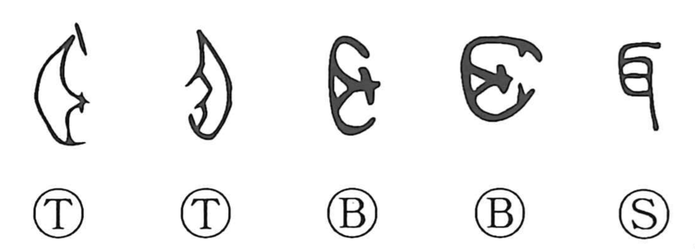

耳

Kun: mimi | On: ji
ear ・ hearing
Explanation
A straightforward pictograph of an ear, this character already in early forms sketches the organ itself. The Shuowen defines it as what is in charge of hearing. In related graphs its role is broadened: 聴/聽 brings together ear, eye, and heart to show that true listening engages the chief senses and the mind; ear and eye stand as the foremost human faculties. In 聖, Shirakawa reads the figure as a person standing on tiptoe before a covenant receptacle, chanting prayers—a ritual expert able to hear the voices and messages of the deities. Similarly, 聡/聰 speaks of a wise, lucid grasp of those divine communications. Thus 耳 is the root sign for heeding and receiving sound, both human and numinous.